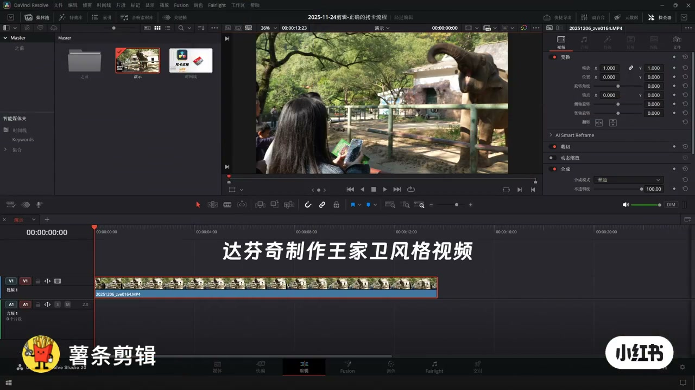
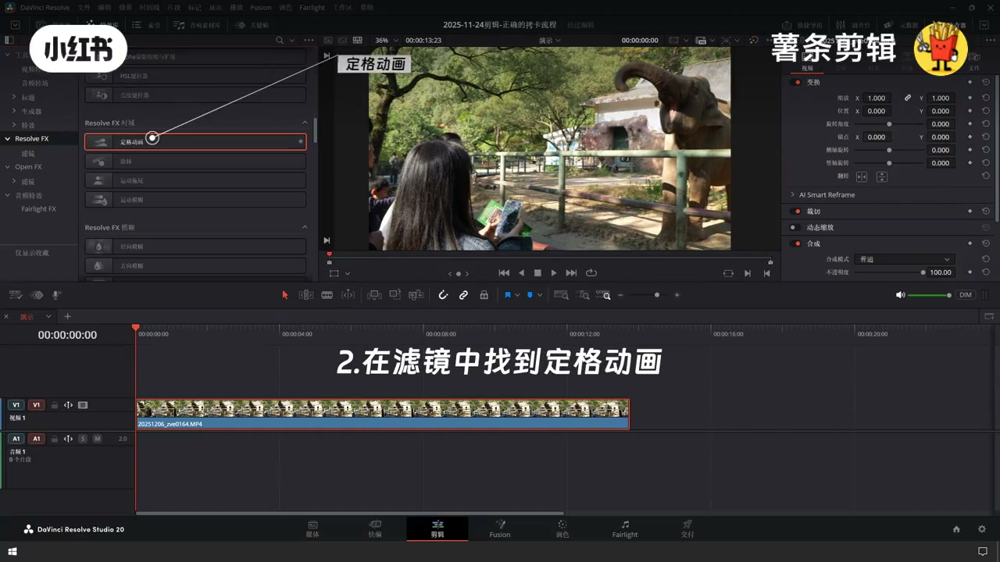
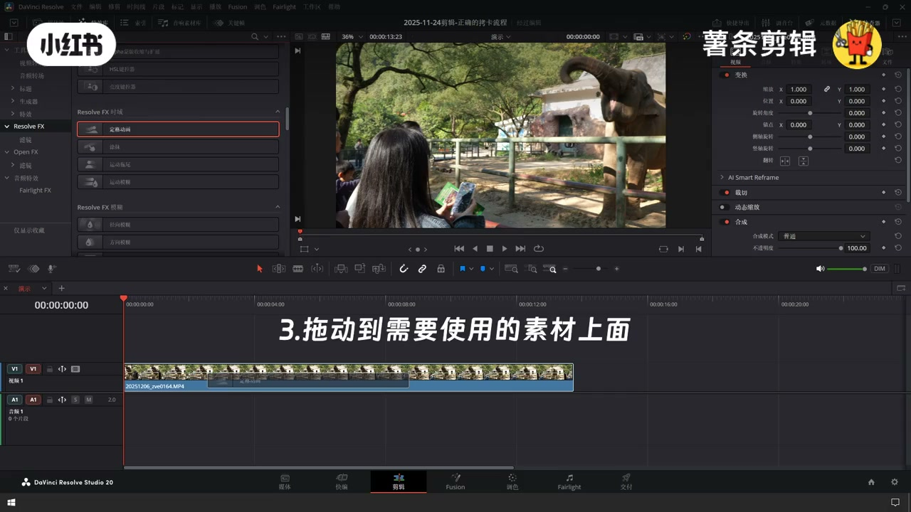
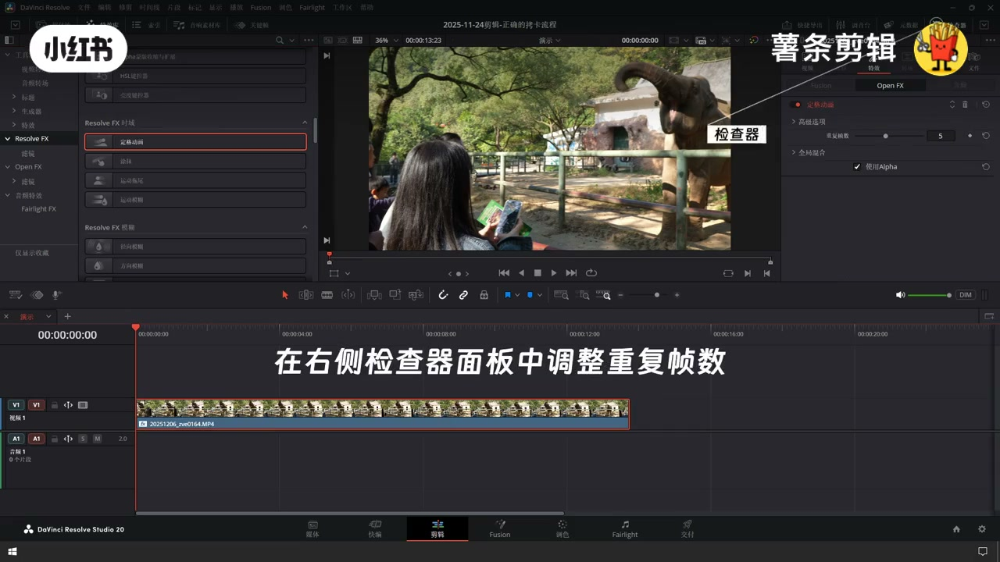
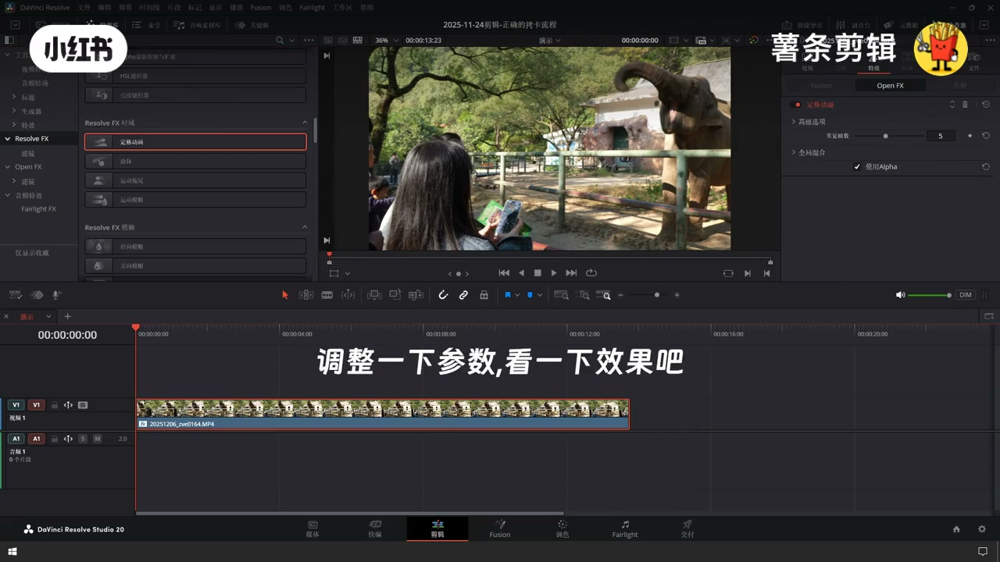
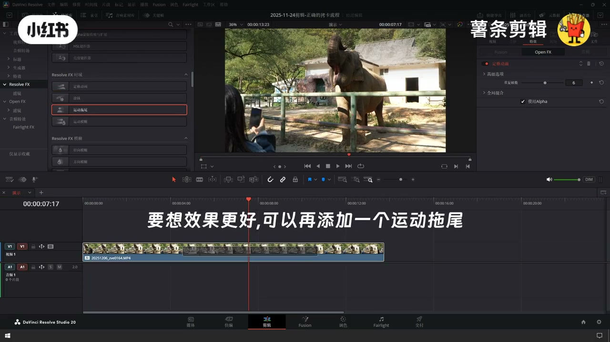
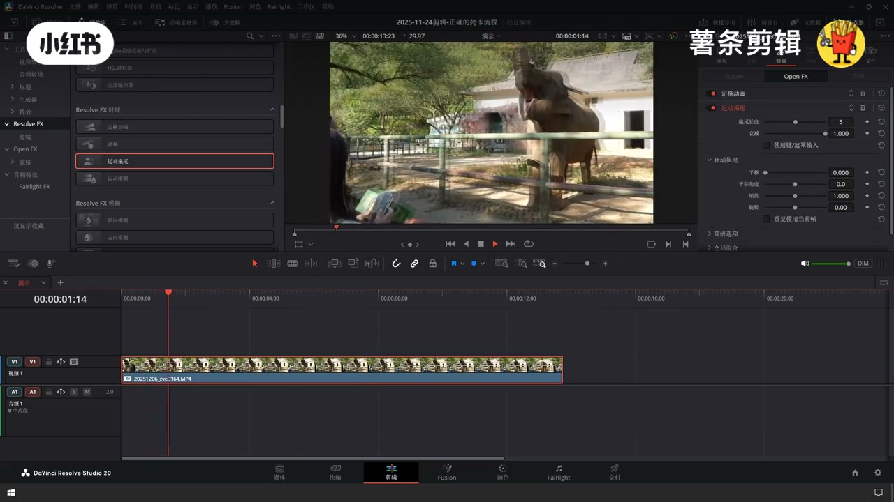
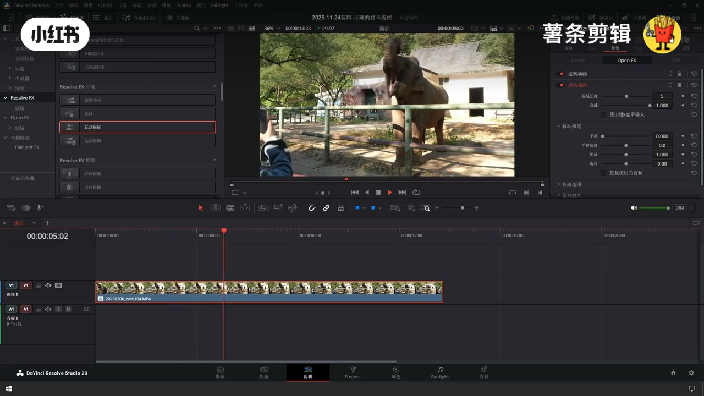

内容要点
用 Resolve FX「定格动画」抽帧（调重复帧数），再叠「运动拖尾」增强电影感/王家卫式顿挫。路径：特效库 → 时域 → 定格动画，拖到素材；检查器调重复帧；需要时再加运动拖尾。
知识结构
[00:00–00:10]
目标与三步上滤镜
特效库→定格动画→拖到素材。
[00:10–00:20]
检查器调重复帧数
重复帧数控制抽帧强度。
[00:20–00:29]
加运动拖尾增强氛围
可选：运动拖尾长度/衰减。
总步骤
- 特效库打开 Resolve FX 时域
- 找到「定格动画」拖到素材
- 检查器调重复帧数（例：5）
- 预览效果
- 可选再加「运动拖尾」调长度/衰减
总结
王家卫感≈定格抽帧（重复帧）+ 可选运动拖尾；先定格再拖尾。
适用边界：偏风格化滤镜；纪录片/稳画慎用；重复帧过高会变幻灯片。
踩坑：定格动画在「Resolve FX 时域」而非转场；只加拖尾不加定格不像抽帧。
00:00–00:10目标与三步上滤镜
片头：制作王家卫风格。步骤：①点左上角特效库；②滤镜/时域里找「定格动画」；③拖到目标素材。定格动画本质是抽帧（重复显示帧）。

[00:01] 片头：达芬奇制作王家卫风格视频
Title: Wong Kar-wai look in Resolve

[00:04] 1. 点击左上角特效库
1. Open Effects Library

[00:08] 3. 把定格动画拖到素材上
3. Drag Stop Motion onto the clip
00:10–00:20检查器调重复帧数
右侧检查器打开定格动画参数，调重复帧数（示例 5）。数值越大顿挫越强、越像定格。先微调再看效果。

[00:12] 定格动画＝抽帧
Stop Motion means frame sampling

[00:16] 检查器：重复帧数示例为 5
Inspector: Frame Repeat ≈ 5

[00:19] 调整参数预览效果
Tweak and preview
00:20–00:29加运动拖尾增强氛围
要想效果更好，再添加运动拖尾（Resolve FX 模糊类）。示例：拖尾长度 5、衰减 1.0。定格负责节奏顿挫，拖尾负责运动残影。

[00:23] 叠加运动拖尾并调长度/衰减
Add Motion Blur; set length/decay

[00:27] 成片：抽帧+拖尾的风格预览
Final stop-motion + trail look
口述/画面要点（8段）
结合 Whisper medium 与画面大字整理；专有名词已校对。
达芬奇制作王家卫风格视频
1. 点击左上角的特效库
2. 在滤镜中找到定格动画
3. 拖动到需要使用的素材上面
定格动画的意思就是抽帧
在右侧检查器面板中调整重复帧数
调整下参数,看一下效果吧
要想效果更好,可以再添加一个运动拖尾